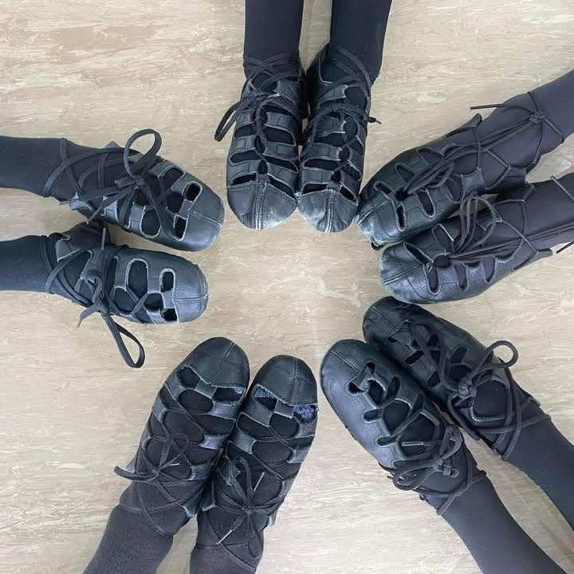

Soft shoe
Graceful, light-footed dancing that develops musicality, posture, and confidence.
Traditional Irish dance
Learn the rhythm, joy, and tradition of Irish dance at Shamrock Steps. We welcome dancers ages 6+ to build confidence in soft shoe and hard shoe.
Ask about classes
A place to begin
Shamrock Steps teaches traditional Irish dancing in an encouraging studio environment. Whether a dancer is discovering their first reel or growing their technique, there is room to learn, move, and belong.
Find your rhythm
Graceful, light-footed dancing that develops musicality, posture, and confidence.
Powerful percussive steps that turn rhythm into something you can hear and feel.
Classes for ages 6+
Interested in joining Shamrock Steps or learning more about available classes? Send us a message and we’ll help you get started.